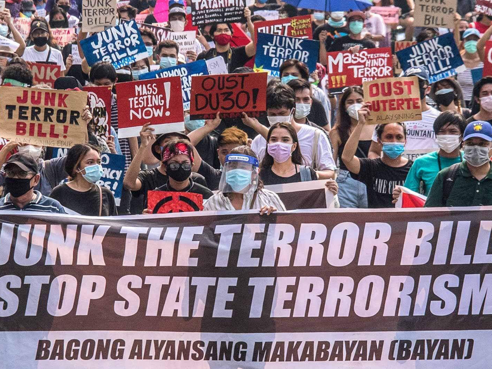
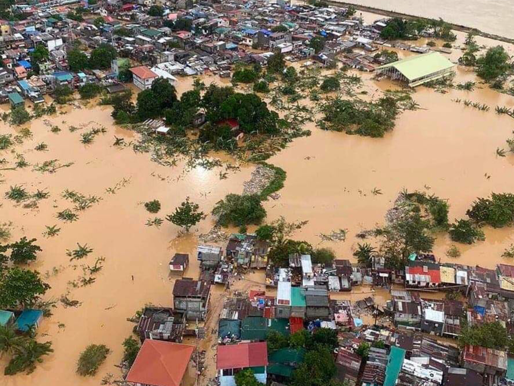
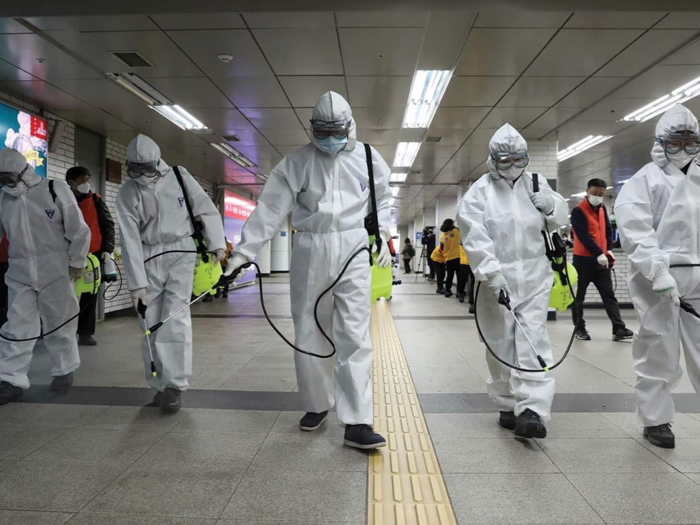

Tomorrow starts today.
9A \\ Group 6
Cartagena | Hinlo | Javier | Makilan | Pabuaya
|    |
| There is so much going around and happening in our world today, a pandemic, wars and terrorist attacks, calamities, global warming, climate change, and several injustices and for all of us, everything seems to be just as terrifying as it sounds. However, despite all the odds being not in our favors, we must never lose the courage to hope and pray for better days. Envisioning a better tomorrow motivates us to take steps to make it happen. Thus, we shall rise even in the most difficult and unimaginably hard times. |